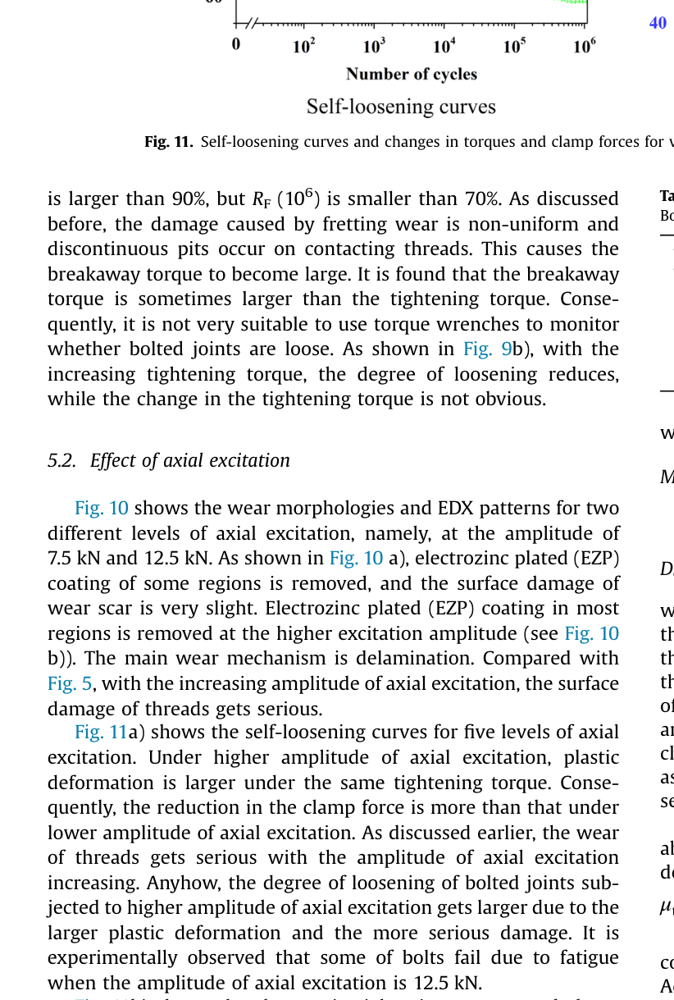
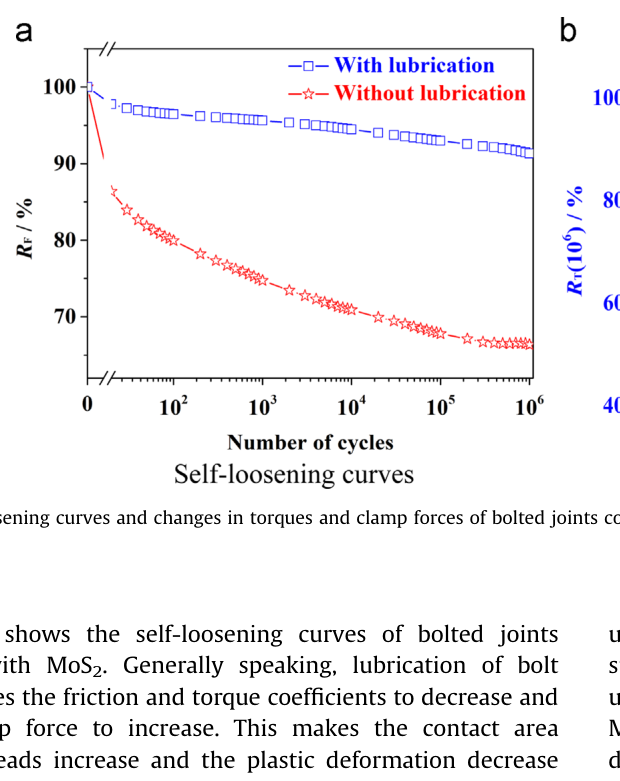
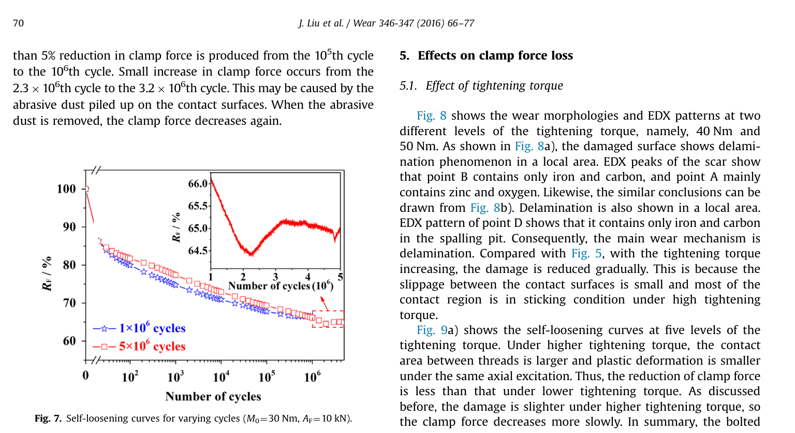

Liu 2016 — estudo de caso— case study
Figura do artigoPaper figure



Figura(s) originais do artigo (recorte do PDF) — a fonte dos pontos que foram digitalizados.Original figure(s) from the paper (PDF crop) — the source of the digitized points.
Condições do ensaioTest conditions
| ReferênciaReference | Liu et al. (2016). Wear 346-347:66-77 · doi:10.1016/j.wear.2015.10.012 |
| ParafusoBolt | M12x1.75 |
| Pré-carga F0Preload F0 | 14–22 kN |
| AmplitudeAmplitude | — |
| FrequênciaFrequency | 30 Hz |
| Família / nº de curvasFamily / curves | axial · 14 |
| MAE medianomedian | 0.036 |
Informações do artigo — aparato, corpo-de-prova, matriz de ensaiosPaper information — apparatus, specimen, test matrix
Liu et al. 2016 (Wear) — Experimental and numerical studies of bolted joints subjected to axial excitation
Citation + DOI
Jianhua Liu, Huajiang Ouyang, Jinfang Peng, Chaoqian Zhang, Pingyu Zhou, Lijun Ma, Minhao Zhu, "Experimental and numerical studies of bolted joints subjected to axial excitation," *Wear* 346-347 (2016) 66-77. DOI: 10.1016/j.wear.2015.10.012.
Tribology Research Institute, Traction Power State Laboratory, Southwest Jiaotong University (SWJTU), Chengdu, China; School of Engineering, University of Liverpool, UK; Qingdao Sifang Locomotive and Rolling Stock Co. Same SWJTU/Liverpool group and rig lineage as the in-library Liu2017 axial paper, but an earlier, distinct study (2015 submission vs Liu2017), different amplitude range, and adds a tightening-torque sweep + MoS2-vs-dry lubrication contrast that Liu2017 does not have.
Gap tag(s)
- G1 (primary) — axial dynamic loading with amplitude sweeps. Fig. 11a gives 5 clean AF levels
(fixed M0=30 Nm, N=10^6 cycles) — a direct, controlled d(final RF)/d(A_F) dataset, exactly the missing-mechanism falsifier that CLAUDE.md roadmap item 9 calls for (Liu2017 already falsified the model's current amplitude-blindness; this is a second, independent rig/paper confirmation/extension at a different amplitude range: here corrected AF ≈ 7.5-12.5 kN vs preload ≈14 kN, i.e. AF/F0 ≈ 0.54-0.89, a much more severe relative-amplitude regime than Liu2017).
- G7 (secondary) — MoS2 vs dry lubrication contrast (Fig. 13a): same rig/M0/AF, only the thread
lubricant changes, with a DIN 946 back-calculated friction coefficient for each (μt=μh=0.132 dry vs μ't=0.029 MoS2-coated) — a clean, quantified friction-coefficient anchor.
- Bonus: a tightening-torque sweep (Fig. 9a, 5 levels, G-tag adjacent to preload-level effects) and a
repeated-tightening/embedding-renewal curve (Fig. 3) that is a plausible (imperfect) analog for roadmap item 5 "embedding renewal on reaperto."
Rig / apparatus
- Machine / loading direction: purpose-built axial excitation rig. Two bolt-testing fixtures (high
strength steel) are clamped together by the bolt+nut under test. One fixture is fixed; a sinusoidal axial excitation Fe (peak amplitude AF, frequency 30 Hz) is applied at the free end of the other fixture — this is a pure axial-tension fatigue-type rig (not a Junker transverse-slip rig).
- Control mode: FORCE-controlled (servo-hydraulic-style axial fatigue rig).
AFis the
commanded force amplitude; the resulting relative displacement δ of the joint is the *measured* response (Fig. 4 plots Fe vs δ hysteresis loops — force is the independent/control axis). Maps to BAS V2 force-mode (step_cycle(F_amp, ...), no delta_amp), consistent with how Liu2017 (same rig lineage) is already handled in validation_cases.py.
- Preload measurement: a load cell is installed in the load path between the bottom fixture and the
nut, continuously logging clamp force every cycle throughout the test (not a periodic-checkpoint method) — high-quality, continuous ground truth. A thin aluminium-alloy washer is inserted between the load cell and fixture specifically to protect the load cell itself from fretting wear.
- Each condition is repeated 4 times (specimen replicates); Fig. 2 and Fig. 3 show the resulting
scatter explicitly (histogram / box-and-whisker), the rest of the figures appear to plot a single representative curve per condition (no error bands on the decay curves themselves).
Specimen / materials
- Bolt: M12×1.75 (coarse), low-carbon steel A283D (ASTM A283/A283M-03), electro-zinc-plated
(EZP), coating thickness ≈5 μm. No stated ISO property class (custom low-carbon steel, not 8.8/10.9). Steel FE properties: E=200 GPa, ν=0.3, yield σs=350 MPa, hardening H=2000 MPa.
- Nut: square nut, aluminium alloy 7050-T7451 (ASTM B209-04). Same alloy used for a thin
protective washer between load cell and fixture.
- Thread insert: stainless steel 316L (ASTM A580/A580M-2008), inserted in the nut to reinforce
engagement with the aluminium female thread (Heli-Coil-like reinforcement, NOT a self-locking device). Al alloy FE properties: E=70 GPa, ν=0.3, yield σs=480 MPa (yes, higher than the steel — 7050-T7451 is a high-strength aerospace alloy), hardening H=400 MPa.
- Bolt geometry (Table 1): thread diameter D=12 mm, pitch p=1.75 mm, basic pitch diameter
d2=10.863 mm, flank angle 60°, bolt-head bearing diameter do=18.5 mm, fixture hole diameter di=13.0 mm, effective bearing diameter De=15.75 mm.
- Surface finish: Ra/Rz not reported — a gap relative to BAS V2's
emb_depth_vdiroughness-class
lookup; cannot assign a roughness class from this paper alone.
- Locking device: none (plain square nut + thread insert only).
- Lubrication: dry (EZP as-is) vs MoS2 grease (lithium-soap-of-hydroxy-fatty-acid + antioxidant +
MoS2), hand-applied as a thin layer on the bolt thread and the head-bearing face before assembly.
Test matrix
| Variable | Levels |
|---|---|
| Tightening torque M0 | 30, 35, 40, 45, 50 Nm (5 levels; Fig. 9) |
| Axial excitation amplitude AF (corrected, see caveat below) | 7.5, 8.75, 10.0, 11.25, 12.5 kN (5 levels; Fig. 11) |
| Frequency | 30 Hz (fixed, all tests) |
| Lubrication | dry (EZP) vs MoS2 grease (Fig. 13) |
| Cycle count | 10^6 (standard, most curves); one specimen extended to 5×10^6 (Fig. 7) |
| Replicates | 4 per condition (repeatability shown explicitly in Fig. 2, Fig. 3, Fig. 7) |
| Retightening turns | 12 repeated tighten/loosen cycles, 5 specimens (Fig. 3) — a *different* experiment (no vibration) |
Preload P0 achieved per M0 (dry/EZP threads, μt=μh=0.132 back-calculated via DIN 946 from M0=30 Nm → P0≈14 kN): M0=30→14 kN, 40→18 kN, 50→22 kN (all three read directly off Table 2's FE loading cases); 35→~16 kN, 45→~20 kN are our linear interpolation, NOT reported by the paper — flagged in case anyone treats them as measured. With MoS2 at M0=30 Nm, P0≈20 kN (μ't=0.029, i.e. friction drop alone raises achieved preload by ~43% at fixed torque). The follow-up self-loosening tests (Section 2) restrict specimens to the P0∈[13.5,14.5] kN band at M0=30 Nm (from the Fig. 2 distribution over 45 joints) before running the vibration series — i.e. the M0=30 Nm/AF-sweep/torque-sweep/lubrication-sweep curves are all pre-screened to a narrow preload band, reducing (but not eliminating, cf. Fig. 7) specimen-to-specimen scatter.
Experimental nuances
- First 20 cycles excluded from all reported curves. The rig cannot apply a steady axial amplitude
during ramp-up; both δmin and the load-cell reading are contaminated for N<20. This is stated explicitly only for the Fig. 4 hysteresis-loop discussion, but by construction it applies to every clamp-force-vs-cycle curve in the paper (all use the same rig/ramp-up). The x=0 row in every CSV below is the as-installed reference point (F/F0=1 by definition), NOT a measured cycle-1 data point — the first real measurement is around N≈20-40.
- Two-stage decay, explicitly attributed by the authors to two different mechanisms (not creep):
a fast initial drop from cyclic plastic deformation / ratchetting of the threads (their words — functionally an embedding-like mechanism), followed by a slow, long-tailed drop from fretting wear between the bolt and insert threads (delamination + abrasive + adhesive + oxidative wear, confirmed by SEM/EDX on the first thread — first-thread damage is emphasized because the axial load distribution is markedly uneven, first thread carrying >30% of total axial load per cited literature). No creep language anywhere in the paper (static hold not tested).
- Non-monotonic long-term tail (Fig. 7, 5×10^6-cycle specimen only): after the initial two-stage
decay reaches a local minimum around N≈2.2-2.3×10^6, RF recovers slightly (≈+0.7 pts) up to a broad plateau around N≈3.2-4×10^6, then declines again toward 5×10^6. The authors attribute this to abrasive wear debris piling up in the contact (temporarily propping the joint) and then being expelled/compacted. This is a small-amplitude (~1 RF-point) but real, repeatable-shaped feature — captured in liu2016wear_fig7_run2_5e6cyc.csv.
- Preload itself is not repeatable under nominally identical tightening (Fig. 2: 45 joints at
M0=30 Nm span roughly 12-16 kN, ~50% inside 13.5-14.5 kN) — parametric/manufacturing uncertainty is explicit motivation for the paper's specimen-screening protocol above.
- Repeated-tightening embedding effect (Fig. 3, separate from vibration): re-torquing the same joint
to M0=30 Nm 12 times (no axial excitation involved) shows achieved clamp force dropping sharply over the first ~3 retightenings then stabilizing — i.e. embedding/settling consumed by repeated *installation* cycling alone, no vibration needed. This is the closest analog in this paper to roadmap item 5 ("embedding renewal on reaperto"), but note the mechanism driving it (repeated thread engagement/disengagement under torque) is not the same physical process as vibration-driven self-loosening followed by a single re-tightening — treat as a suggestive, not a direct, analog.
- High relative amplitude / possible full separation each cycle: AF/F0 ≈ 0.54-0.89 at M0=30 Nm (using
corrected AF, see caveat). The FE section (Table 2, Fig. 16) shows clamping force driven to exactly zero under sufficiently high axial excitation for the lower torque levels (full joint separation each cycle), meaning parts of this test matrix probe a more severe "near-separation fatigue" axial regime than typical low-amplitude self-loosening. Some bolts fractured by fatigue at the highest AF level (paper's own AF=12.5 kN, our corrected reading) — an out-of-model failure mode, same caution as other fatigue-tail cases already flagged in MODEL_LEGITIMACY.md.
- FEM vs experiment split: Section 6 (Figs. 14-19, Table 2) is a 3-D ABAQUS elastoplastic FE model
(193,906 nodes) used to explain *why* (frictional stress/slip/frictional-work-per-unit-area along two paths on the first thread), cross-validated only qualitatively against the trends (not point-by-point) in Sections 4-5. Fig. 16 (clamping force vs. excitation, FE), Fig. 18 (frictional stress/slip, FE), Fig. 19 (frictional work/area, FE) are FEM output — NOT digitized, per task instructions (calibrate only on experimental curves).
- Torque-wrench monitoring is unreliable post-test: breakaway torque
RTis sometimes *larger* than
the original tightening torque after 10^6 cycles (non-uniform, discontinuous fretting pits raise measured breakaway torque even though clamp force RF has clearly dropped) — the authors explicitly recommend against using torque-check as a loosening proxy for these dry joints. For MoS2-lubricated joints, by contrast, RT tracks RF well (low uncertainty) — itself a small, useful, second-order MoS2-vs-dry contrast beyond the main RF curves.
Main conclusions
- Preload of nominally identical joints at the same tightening torque is not repeatable (parametric
uncertainty); repeated tightening/loosening (no vibration) causes achieved preload to drop over the first ~3 cycles then stabilize.
- Clamp-force loss under axial excitation is two-stage: fast plastic-deformation-driven drop, then slow
fretting-wear-driven drop. Dominant wear mechanism at the first thread is delamination, accompanied by abrasive/adhesive/oxidative wear.
- Higher tightening torque (→ higher preload, larger thread contact area, more of the contact in
sticking rather than slipping) monotonically reduces both clamp-force loss and thread damage.
- Higher axial-excitation amplitude monotonically increases both clamp-force loss and thread damage
(larger plastic deformation, more severe wear) — some bolts fatigue-fractured at the highest AF level tested.
- MoS2 lubrication (μt drops from 0.132 to 0.029) substantially reduces both loosening and thread damage,
and — unlike the dry case — its breakaway-torque loss tracks its clamp-force loss consistently. Torque-wrench checks are therefore a much more trustworthy loosening indicator for lubricated than for dry joints.
- The FE model reproduces the torque/amplitude/lubrication trends in frictional work per unit area
(proxy for wear volume via Fridrici's linear wear-volume/dissipated-friction-energy relationship), and places the peak frictional effect near the thread crest in the radial direction.
Curve inventory
| Figure | Condition | CSV filename | x-axis unit | F0 used to normalize | # points |
|---|---|---|---|---|---|
| Fig. 3 | Retightening effect, M0=30 Nm, no vibration (x = tightening-turn index 1-12, NOT cycles) | liu2016wear_fig3_retighten_turns.csv | tightening-turn # | clamp force at turn 1 (≈14.35 kN, our choice — paper plots raw kN, not a ratio) | 12 |
| Fig. 7 | M0=30 Nm, AF=10 kN, specimen run to 1×10^6 cycles | liu2016wear_fig7_run1_1e6cyc.csv | cycle # | P0≈14 kN (paper's own RF definition) | 26 |
| Fig. 7 | M0=30 Nm, AF=10 kN, specimen run to 5×10^6 cycles (incl. non-monotonic tail from inset) | liu2016wear_fig7_run2_5e6cyc.csv | cycle # | P0≈14 kN | 37 |
| Fig. 9a | Torque sweep, AF=10 kN, M0=30 Nm | liu2016wear_fig9a_m30nm.csv | cycle # | P0≈14 kN | 26 |
| Fig. 9a | Torque sweep, AF=10 kN, M0=35 Nm | liu2016wear_fig9a_m35nm.csv | cycle # | P0≈16 kN (interpolated) | 26 |
| Fig. 9a | Torque sweep, AF=10 kN, M0=40 Nm | liu2016wear_fig9a_m40nm.csv | cycle # | P0≈18 kN | 26 |
| Fig. 9a | Torque sweep, AF=10 kN, M0=45 Nm | liu2016wear_fig9a_m45nm.csv | cycle # | P0≈20 kN (interpolated) | 26 |
| Fig. 9a | Torque sweep, AF=10 kN, M0=50 Nm | liu2016wear_fig9a_m50nm.csv | cycle # | P0≈22 kN | 26 |
| Fig. 11a | Amplitude sweep, M0=30 Nm, AF=7.5 kN corrected (printed legend "15.0 kN", see caveat) | liu2016wear_fig11a_af7p5kn.csv | cycle # | P0≈14 kN | 26 |
| Fig. 11a | Amplitude sweep, M0=30 Nm, AF=8.75 kN corrected (printed "17.5 kN") | liu2016wear_fig11a_af8p75kn.csv | cycle # | P0≈14 kN | 26 |
| Fig. 11a | Amplitude sweep, M0=30 Nm, AF=10.0 kN corrected (printed "20.0 kN") | liu2016wear_fig11a_af10kn.csv | cycle # | P0≈14 kN | 26 |
| Fig. 11a | Amplitude sweep, M0=30 Nm, AF=11.25 kN corrected (printed "22.5 kN") | liu2016wear_fig11a_af11p25kn.csv | cycle # | P0≈14 kN | 26 |
| Fig. 11a | Amplitude sweep, M0=30 Nm, AF=12.5 kN corrected (printed "25.0 kN") | liu2016wear_fig11a_af12p5kn.csv | cycle # | P0≈14 kN | 26 |
| Fig. 13a | Without lubrication (dry), M0=30 Nm, AF=10 kN corrected (caption printed "20 kN") | liu2016wear_fig13a_dry.csv | cycle # | P0≈14 kN | 26 |
| Fig. 13a | With MoS2 lubrication, M0=30 Nm, AF=10 kN corrected (caption printed "20 kN") | liu2016wear_fig13a_mos2.csv | cycle # | P0≈20 kN (MoS2 raises achieved preload) | 26 |
Not digitized (context only): Fig. 1 (rig photo), Fig. 2 (preload histogram, M0=30 Nm), Fig. 4 (hysteresis loops Fe-vs-δ, not a decay curve), Figs. 5/6/8/10/12 (SEM+EDX images), Figs. 9b/11b/13b (bar charts of RT(10^6)/RF(10^6) at 3 sub-levels each — used here only as independent cross-checks on the curves above, see caveats), Fig. 14/15/17 (FE mesh/model/path definitions), Fig. 16/18/19 (FE results — explicitly FEM, excluded per task instructions).
V2 mapping
- Force-controlled axial rig → BAS V2 force-mode (
step_cycle(F_amp, theta_load, freq), no
delta_amp), same handling as the in-library Liu2017 axial cases.
- Fig. 11a is a direct, controlled
d(final RF)/d(A_F)anchor for roadmap item 9 (missing
amplitude-driven axial mechanism): holding M0/P0/frequency/N fixed and sweeping only AF (corrected 7.5→12.5 kN) gives final-RF(10^6) dropping from 0.758→0.593, i.e. Δ(F/F0)/Δ(A_F) ≈ −0.033 per kN (≈ −0.0033 kN⁻¹ in fractional-preload terms per kN of amplitude) at this rig's scale — a second, independent falsification/confirmation point for whatever new A_F-driven form eventually gets built, complementing Liu2017's slope. Units/scale are NOT directly comparable to Liu2017's reported slope without checking Liu2017's own AF definition against this paper's ×2 caveat below — do that reconciliation before using both numbers together.
- Fig. 9a (torque/preload sweep) gives a clean, monotonic
d(final RF)/d(P0)trend (no
crossing/non-monotonicity across 5 levels) — useful as a secondary, non-falsifying cross-check for whatever preload-dependence the model already has (embedding + wear + conformance), since this trend is qualitatively already reproduced by the existing engine (more preload → less relative loss).
- Fig. 13a (MoS2 vs dry) anchors a friction-coefficient contrast with a physically-derived μ: μt=μh=
0.132 (dry, DIN 946 back-calculated from M0=30 Nm/P0≈14 kN) vs μ't=0.029 (MoS2). This is a clean, quantified mu_bearing/mu_thread input pair (not fitted — derived from the torque-preload equation in the paper itself) that could seed a friction-input sensitivity check, and speaks to gap G7 (MoS2 friction-reduction magnitude, useful context for k_dmg_mu/mu_bearing_eff work).
- Fig. 3 (retightening, no vibration) is a *candidate*, not a validated, analog for roadmap item 5
(embedding renewal on reaperto / retighten() + k_emb_renew) — it shows embedding-like settling driven by repeated *installation* torque cycles rather than by vibration + a single re-tightening event. Treat with caution if used to calibrate k_emb_renew directly.
- Provenance caveats: no Ra/Rz reported → cannot assign an
emb_depth_vdiroughness class from this
paper alone (would need to borrow from a similar EZP-steel-on-aluminium pairing elsewhere in the library, or treat emb_depth as unconstrained by this source). C_creep is not addressable at all (no static-hold data, no creep language) — this paper contributes nothing to the C_creep anchor question (§4.7 MODEL_LEGITIMACY.md). The high AF/F0 ratio (up to ≈0.9) and FE-confirmed full-separation regime (Fig. 16) mean this dataset partly sits outside the "gentle self-loosening" regime most of the calibration library targets — worth flagging if a future gate treats it as a strict transfer target rather than a severe-regime probe.
Digitization caveats
- Fig. 11a legend appears to have a systematic ×2 mislabeling, corrected in our filenames/CSVs. The
printed legend states AF = 15.0/17.5/20.0/22.5/25.0 kN (confirmed by a tight high-DPI crop, not an OCR artifact), but this conflicts with three independent sources in the same paper: (1) the running text (Section 2) states the AF sweep for these experiments spans "7.5 kN to ~12.5 kN"; (2) Fig. 10's SEM captions use AF=7.5 kN and AF=12.5 kN as the two illustrated extremes of "varying amplitudes of axial excitation" (the same section as Fig. 11); (3) Fig. 11b — the companion bar-chart panel of the very same figure, same caption/condition — plots its x-axis as AF=7.5/10.0/12.5 kN. Cross-checking final-cycle values removes essentially all doubt: Fig. 11a's "15.0 kN"-labeled curve ends at RF≈76%, matching Fig. 11b's 7.5 kN bar (RF(10^6)≈75%); Fig. 11a's "20.0 kN" curve ends at RF≈66%, matching Fig. 11b's 10.0 kN bar (≈66%) almost exactly; Fig. 11a's "25.0 kN" curve ends at RF≈59%, matching Fig. 11b's 12.5 kN bar (≈59%). We therefore digitized Fig. 11a's curve shapes exactly as plotted but relabeled the AF metadata using the halved (corrected) value, and encoded that correction directly in the filenames (e.g. fig11a_af10kn.csv for the curve printed "AF=20.0kN"). If this reasoning is later found to be wrong, only the AF tag on these 5 files needs correcting — the RF-vs-cycle data itself is unaffected.
- Same ×2 pattern likely affects Fig. 12/13's caption "AF=20 kN". Fig. 13a's "without lubrication"
curve is nearly indistinguishable from Fig. 9a's M0=30 Nm/AF=10 kN curve (both end at RF≈65-66% at N=10^6) — a very close match, hard to attribute to coincidence given Fig. 7 already shows that even the *same* condition run twice only agrees to about ±1-2 RF points at 10^6 cycles. AF=10 kN is also the "standard" reference condition used throughout the rest of the paper (Figs. 4, 7, 8, 9). We therefore used corrected AF=10 kN (not the printed "20 kN") for both liu2016wear_fig13a_dry.csv and liu2016wear_fig13a_mos2.csv. This is a judgment call, not a certainty — flagged here explicitly.
- General reading uncertainty: dense, log-x-axis, small-marker curves read from a 250-500 dpi raster
render (no vector/underlying-data access). Estimate ±1-2 RF percentage points typical, worse (~±2-3 points) in the first 2 decades (N=20-1000) where marker density is highest and several curves overlap closely (especially Fig. 7's two nearly-coincident curves, and Fig. 9a's M0=40/45 Nm pair). Fig. 7's 5×10^6-cycle tail (N>10^6) was read from the paper's own inset (higher effective resolution: 64.5-66.0% over a 5-unit x-span) rather than the compressed main panel, so that portion should be more accurate than the rest.
- Fig. 9a's M0=40 Nm curve was nudged to end at RF≈77.5% (vs. a first-pass eyeball reading of ≈77%)
to sit inside the Fig. 9b bar's error bar (≈78±4%); still a judgment call given the two panels are read independently and both carry their own uncertainty.
- x=0 rows are the as-installed reference (F/F0=1), not a measured N=1 data point — see "first 20
cycles excluded" nuance above. Treat the first ~20-40 cycles of decay as un-sampled/interpolated by the rig's own ramp-up, not by us.
- Fig. 3's y-axis is raw clamp force (kN), not a ratio — we normalized by the first tightening's
median (≈14.35 kN) to produce F/F0, which is our own choice (the paper does not define an F0 for this particular plot). Box-plot whiskers/error bars are not carried into the CSV (only the median/center of each red box was digitized).
- No experimental figure in this paper was excluded for being FEM-mislabeled-as-experimental or vice
versa — the FEM/experiment split is clean and explicit in the text (Section 6 = FE only), so Figs. 16/18/19 were straightforwardly skipped as FEM outputs per task instructions.
Modelo vs dadoModel vs data
Cada card = uma curva digitalizada deste estudo: a linha é a previsão do modelo (config adotada, do store canônico) e os pontos são o dado medido; o badge traz o MAE.Each card = one digitized curve from this study: the line is the model prediction (adopted config, from the canonical store) and the dots are the measured data; the badge shows the MAE.
ReprodutibilidadeReproducibility
Cada card tem ↓ CSV (modelo + dado da curva). Os CSVs digitalizados originais ficam em Models/CALIBRATION_AND_VALIDATION/curve_library/digitized_csv/; a curva do modelo vem do store canônico (config adotada por fonte). Para reproduzir localmente:Each card has ↓ CSV (curve model + data). The original digitized CSVs live in Models/CALIBRATION_AND_VALIDATION/curve_library/digitized_csv/; the model curve comes from the canonical store (adopted per-source config). To reproduce locally:
Ver também o guia de uso do programa e a metodologia.See also the program usage guide and the methodology.